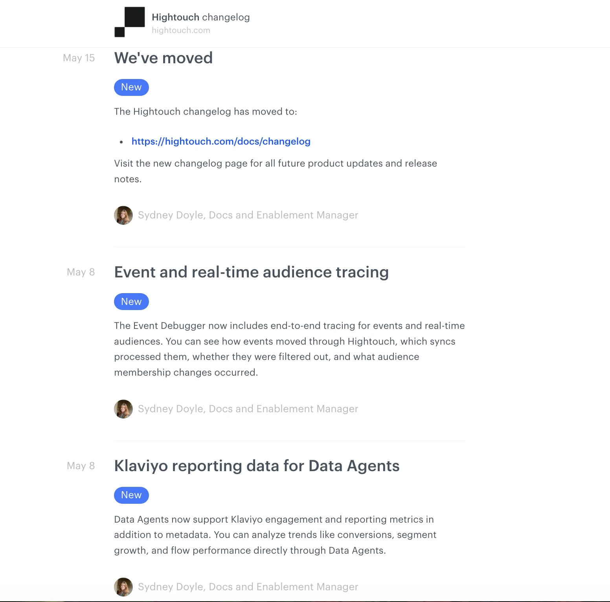
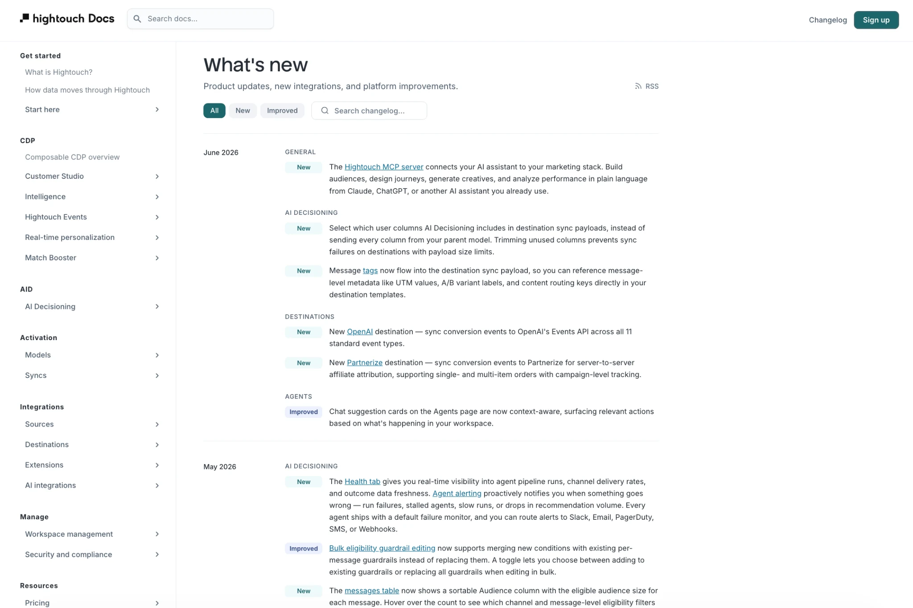
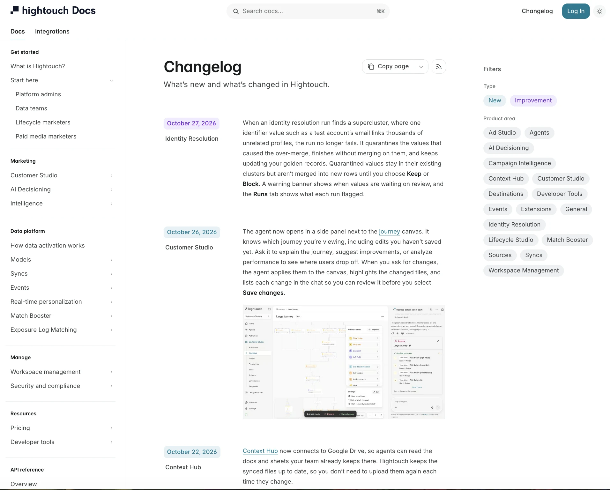

Audience and discovery problem: The documentation homepage and navigation still reflected Hightouch's origins as a customer data platform. As the company expanded its marketing tools, the experience needed to help marketers and technical teams understand the broader platform and find their starting points.
Challenge: Our custom Next.js documentation site gave us flexibility, but AI discoverability, publishing workflows, and ongoing engineering maintenance needed attention. We needed to improve the experience immediately while deciding whether to keep building or adopt a managed platform.
Prototype and evaluate: I planned, designed, and coded interim improvements to the existing site, including a documentation MCP server, llms.txt, an integrated product changelog, and custom use-case discovery cards. Building these capabilities gave me firsthand insight into implementation effort, customization needs, and the tradeoffs of maintaining them ourselves. I compared Mintlify, GitBook, Kapa.ai, and our existing stack across AI access, search, analytics, authentication, customization, migration complexity, and cost.
Lead the transition: I selected Mintlify to reduce long-term maintenance, then planned and led the migration with our web team without vendor-led implementation. The transition included content conversion, rebuilding custom experiences, preserving access to authenticated documentation, coordinating the publishing freeze and domain cutover, and improving contributor access. We launched in early November 2026, ahead of plan.
Changelog evolution
Evolve the changelog: I inherited a separate, chronological announcement feed with basic update labels. Before migrating platforms, I built an integrated documentation changelog with search, chronological grouping, product categories, and new-versus-improved labels. During the Mintlify migration, I redesigned it again with dedicated product-area and update-type filters, embedded screenshots, and integration with the wider docs experience. These are successive iterations of a system I owned, not a capability first introduced by Mintlify.
The original feed, the integrated changelog I built, and the current Mintlify changelog represent three stages of this work.
Three iterations of the changelog



Redesign discovery: I reorganized documentation navigation around user personas and workflows, improved onboarding paths and search, and established a more scalable foundation for public and private documentation.
Visual story: The original docs homepage foregrounded data activation and technical product categories; the new homepage introduces the broader platform and role-based starting points for admins, data teams, lifecycle marketers, and paid media marketers. The changelog evolved separately from an isolated announcement feed to a searchable integrated experience and then a refined filterable design.
Business impact: Because I could scope and lead the migration internally, our Finance/procurement stakeholders could decline migration services, dedicated account management, and other unnecessary extras. That gave them leverage to negotiate the proposed annual contract substantially, reducing ongoing vendor costs. I enabled the negotiating position; the commercial negotiation was handled by those stakeholders.